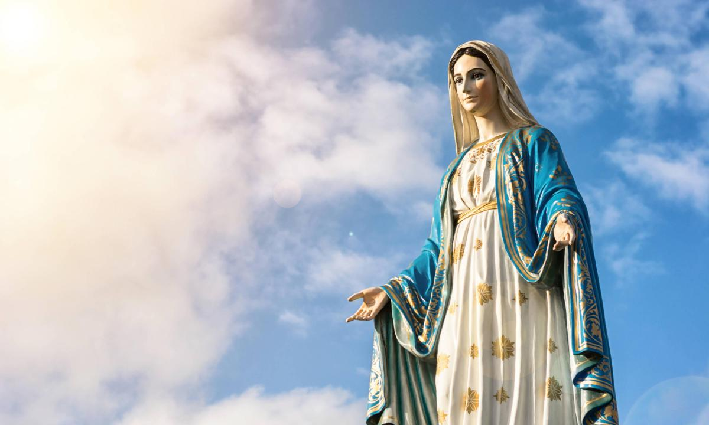

María la Virgen siempre va a estar con vos🌺
La razón por la que coloco a la gran madre de todos acá es para, además de que te sirva de apoyo y para que siempre sepas que no vas a estar sola junto con ella, es porque representa la mayor muestra de amor que existe: la del amor de una madre hacia su hijo (La de la Virgen hacia el niño Dios). Dios la admiraba (a la Virgen) porque nadie llegó a querer tanto a su hijo que esta señora. Fué ella, la envidia de Satanás es ese sentimiento, la señora que nos lleva a Jesus, la mujer más importante de la historia.
Que la Virgen María te bendiga con su poder y santidad junto con el niño Jesús en este día de la madre de este año 2023 y por el resto de tu vida. Que te ilumine y te acompañe en tu camino y en lo que estoy seguro de que va a ser uno de los más felices períodos de tu vida. Todos nosotros, como creyentes, tenemos a esta mujer como nuestra madre celestial que nos cuida y ampara cuando más la necesitamos. Así que cada vez que busques consuelo, búscalo en ella. Muchas bendiciones!✨
